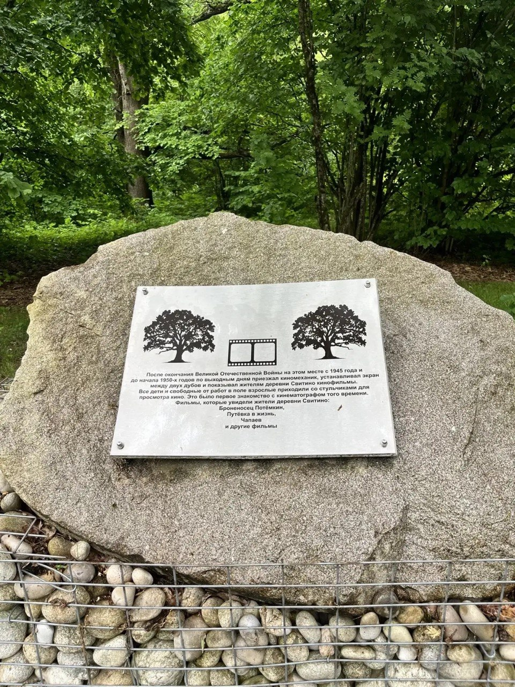

С 1945 года
Экран между двух дубов
После войны по выходным в деревню приезжал киномеханик, натягивал экран между двух дубов и показывал жителям кино. Это было первое знакомство Свитино с кинематографом.
SVITINO.TV - продолжение того самого экрана, спустя восемьдесят лет.
Броненосец ПотёмкинПутёвка в жизньЧапаев
